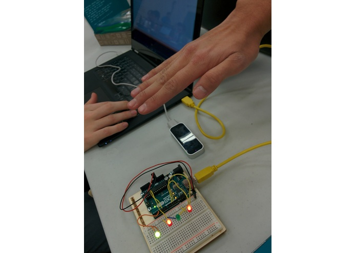
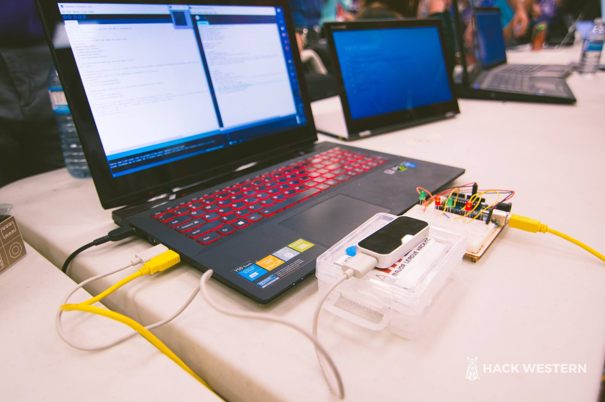

Projects
Mechatronic Design Project

Description
This robot was tasked with scanning a square of unknown size to detect and retrieve magnetic "teseracts" and deliver the cubes to a holding area. At the holding area the same robot must operate in "mode 2" to retireve teseract from holding area and drive under a stucture to place the teseract at the top of a raised platform. The objectives must be completed autonomusly.
Electronics
- Hall effect sesnors
- Encoders
- Ultrasonic sensors
- DC Motors
- Servo Motors
- Custom PCB that utilised AT mega328 microcontroller
How it Worked
The robot started in a corner of a square. A button had to be pressed once to initiate mode 1. Using the encoders and PID control it drove in a straight line. The ultrasonic sensors detected when it had reached a wall and needed to preform a 180 degree turn. The three Hall Effect sensors that were positioned directly infront and to the sides detected the change in magnetic flux. Depending on which sensor was triggered the robot would position its self such that the mangetic cube was directly under the claw. The claw would drop down and pick up the magnet and return to its original position. Depending on its location the robot will make a series of left and right turns to return home. At home, using the ultrasonic sensor to position it would position its self the correct distance from the wall to drop off the magnetic cube. It would then return to its original starting position and recalibrate sensors for its second run.
Biggest Challenge
One of the major issues faced at the begging of coding the robot was getting it to drive in a straight line, which was important in allowing te robot to know its position realative to its start. I implemented a PID control to check the rate of change of one wheel and asjust the second wheel to move at the same rate as its partner. This worked realtivly well in getting the robot to drive in a straight line, however used a constant to offset the speed which was case dependent on the battery and power. In the future extra ultr sonic sensors would be used on all sides of the robot to keep it a ceratin distance when traveling parrallel to the wall.
Other Skills
- Arduino
- Solid Works
- git
- Control Systems
- 3D printing
- Mechanical Design
Collaborators
- James Melisek
- Bridget Hall
- Ryan Baxter
HackWestern - The wave
-

- 
- 
Description
My team of four participated at HackWestern 2 in Janurary 2016. Our goal with The Wave was to allow people to control their homes with simple hand gestures. Some examples are turing the lights on/off and controlling music with the swip of your hand. For the project we used a LeapMotion and Arduino Uno to develop a prototype that demenstrotes home automation proof of concept. The LeapMotion registed the hand gestures and comunicated with the Arduino to control the LEDs.
Electronics
- Leap motion
- Arduino Uno
- LEDs
How it Worked
Biggest Challenge
Collaborators
- Brandon Assing
- Zach Asis
- Wallace Chan
Line Following Robot
Pre designed robot assembled using vex components and custom pcb based on arduino atmega328. The robot followed a line to a destination where it picked up a light with the claw and delivered the light to a drop off location. Detected the specific location of the LED using a light sensor.
Skills used: Arduino, soldering, C